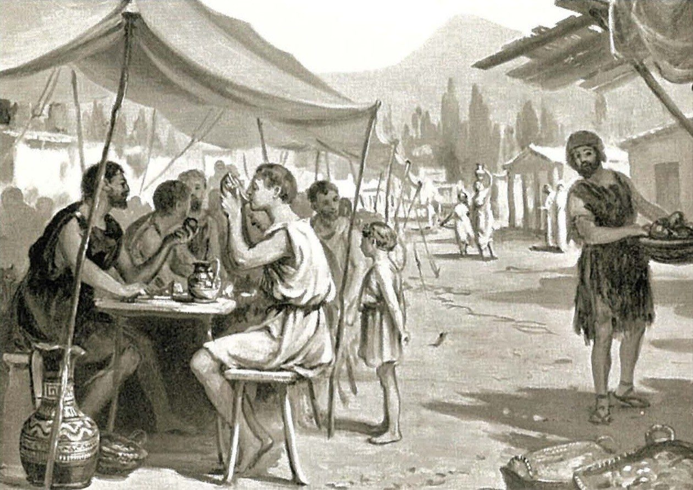
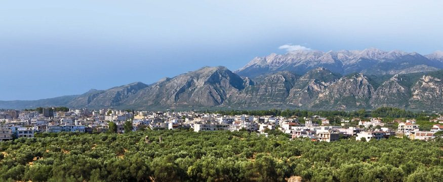

Spartan society to the Battle of Leuctra 371 BC · Lesson 12
Controlling the helots
How did a few thousand citizens keep a far larger subject population working for them — and what happened when control failed?
Year 12 Ancient History · Section II, Option G · Present with → or space · Read on a phone with R

Connect · 3 minutes · cold call
From who the helots were to how they were controlled
Unfree Greeks in Laconia and Messenia, tied to the land, who farmed for Spartiate masters. The sources disagree: Aristotle and Thucydides portray them as trouble, while Cooley says Herodotus and most of Xenophon treat them “simply as part of the scenery”.
Every Spartiate was a trained hoplite, and the citizen body was small: in 480 BC Herodotus’ Demaratus gives Sparta “about eight thousand men”.
How did so few citizens keep a far larger helot population under control — by everyday routine, or in response to particular crises?
One key idea from Lesson 8, in one sentence.
Learning intentions and success criteria · 2 minutes
Today’s goals
- evaluate the methods the Spartans used to control the helots
- compare how two writers report the same event, and explain why they differ
- write a 6-mark explanation that explains methods of control rather than describing the helots
- explain at least four of the six methods of control, each supported by a named source
- compare Thucydides’ and Plutarch’s versions of the disappearance of the 2,000 helots
- explain how the earthquake of c. 464 BC and Poseidon’s sanctuary at Tainaron connect helot control with religion
- write a 6-mark answer to ‘Explain how the Spartans controlled the helots’ in 11 minutes
NESA’s 2025 feedback lists, as an area to improve, “focusing on the methods of controlling the helots, rather than describing the role of the helots (b)”. Lesson 8: what helots did. Today: how they were controlled.
Note-making · today’s routine
How to structure your notes
questions and key terms
short phrases, arrows (→ led to), abbreviations (Thuc. = Thucydides, Plut. = Plutarch)
- 1Listen and look firstDon’t copy while the slide is being explained.
- 2Write your own notes at each ✎ checkpointPhrases, not sentences. Arrows for cause and effect.
- 3Compare with the model notesThey appear one row at a time. Add what you missed in a second colour.
- 4Copy each cue question into the left columnLater, cover your notes and answer the cue questions from memory.
- 5Finish with a three-sentence summaryFive checkpoints: numbers and force · the messes · the krypteia · deception, humiliation and reward · when control failed.
Key vocabulary
Words you will use today
| Control | Meaning |
|---|---|
| krypteia | Cooley: a “group of young Spartans sent out on night-time training exercise of unclear purpose”; Plutarch, citing Aristotle, says they killed helots by night |
| syssition (pl. syssitia) | a common mess of about fifteen citizens, who met for regular evening meals |
| ephors | five officials elected each year, with wide powers; they controlled the krypteia |
| neodamodeis | helots probably set free to serve in the army |
| manumission | freeing a slave |
| deterrence | preventing an action by making people fear the consequences |
| Religion and places | Meaning |
|---|---|
| religious pollution | a stain of guilt, believed to anger the gods, caused by unlawful killing or sacrilege |
| sanctuary · suppliant | a sacred place belonging to a god · a person who takes refuge at an altar to claim a god’s protection |
| Mt Ithome | the mountain stronghold in Messenia where rebel helots held out after the earthquake |
| Tainaron | the southern tip of the middle Laconian peninsula, with a sanctuary of Poseidon |
| Pylos · Sphacteria | a headland on the west coast of Messenia, seized by the Athenians in 425 BC · the island beside it |
Spelling: Cooley’s translations use Greek forms (Lakedaimonians, Lykourgos, Kritias, Pohoidan, Sphakteria). In your own writing use Lacedaemonians, Lycurgus, Critias, Poseidon, Sphacteria. NESA’s 2025 feedback on part (a) also warned against “confusing the ekklesia with the ephorate, gerousia, krypteia or other Spartan terms (a)”.
1 · A problem of numbers and fear · I do — map think-aloud
Where helot control happened
- 1LaconiaSparta and the Eurotas valley. Helots lived here “in large numbers”, as well as in Messenia (Cooley).
- 2Mt TaygetusThe range between Laconia and Messenia, with helots on both sides.
- 3HelosAncient writers derived ‘helot’ from it (Lesson 8). Its exact site is uncertain.
- 4GytheionA perioikic port. Cartledge suggests the perioikoi were a “territorial reserve against the helots”.
- 5Mt IthomeRebel helots held out here after the earthquake of c. 464 BC; Athens later settled the exiles at Naupaktos.
- 6ThouriaA perioikic town that joined the revolt: the exception before 370/69 BC (Cooley, summarising Cartledge).
- 7Pylos and Sphacteria425 BC: the Athenians seized Pylos and trapped Spartiates on the island.
- 8TainaronPoseidon’s sanctuary: a refuge, from which helot suppliants were once lured out and killed.
1 · A problem of numbers and fear · I do — the problem
Few citizens, many helots
In 480 BC Herodotus’ Demaratus gives Sparta “about eight thousand men”. Cooley’s table gives “c. 1,500” by 371 BC — a modern estimate, not an ancient count (Lesson 7).
Cooley: a few thousand Spartiates controlled “a subject population of at least a hundred thousand” (Cooley does not divide it; it probably included perioikoi as well as helots). Thucydides says “The majority of the helots were descendants of the original indigenous population of Messenia”, but there were also “helots in large numbers in Lakonia”.
[3] In the event of an uprising of the slave-body, the Athenians shall to the best of their abilities come to the aid of the Lakedaimonians with all their forces.
Thucydides, History of the Peloponnesian War 5.23.3 · an Athenian, c. 455–400 BC · trans. B. Wilson · Cooley B18
What does this clause suggest about Spartan priorities?
That Sparta took the risk of a helot rising seriously enough to write it into a treaty with the city it had been fighting for ten years. Cooley notes that Sparta was keen to include a special “helot clause” in some of its treaties.
1 · A problem of numbers and fear · I do — building the methods map
Six methods of control
| Method | How it kept the helots under control | Evidence (Cooley) |
|---|---|---|
| 1The army and armed citizens | Deterrence: a trained, armed citizen body that never all went abroad made a rising look hopeless. | Critias (D40) · Xenophon, Lak. Pol. 12 (D89) |
| 2The syssitia | Solidarity and watchfulness among the citizens; every man’s mess dues came from helot labour. | Xenophon, Lak. Pol. 5 (D61) · Plutarch, Lyk. 10 (D63) |
| 3The krypteia and the ephors’ declaration of war | Terror and unpredictability; the yearly declaration meant killing a helot brought no religious pollution. | Plutarch, Lyk. 28, citing Aristotle (D44) |
| 4Terror and deception | A false offer of freedom exposed the boldest helots; about 2,000 were “never seen again”. | Thucydides 4.80 (E68) |
| 5Humiliation | Marked the helots as permanently inferior, and showed young Spartiates what they must never become. | Plutarch, Lyk. 28 (D44) · Myron of Priene (D41) |
| 6Rewards and freedom | Drew the boldest helots into Spartan service instead of leading revolts. | Thucydides 5.34 (E52) · Xenophon, Hell. 3.4.2 (E131), 6.5.28–29 (E69) |
The syllabus names three methods: the military, the syssitia and the krypteia. The sources show more — and two more tools: religion and diplomacy.
2 · The military: a citizen body always armed · We do — an admirer of Sparta
Critias on Spartan watchfulness
The Lakedaimonians have, with regard to the helots, the right of killing first, and Kritias says about them that the most enslaved and the most free are in Lakedaimon. Another thing that Kritias himself says is that because of mistrust towards these helots a Spartiate at home takes out the handle of his shield. Not being able to do this on campaign because of the frequent need for rapid action, he goes about always carrying his spear since this would make him superior to his helot who might revolt but with only a shield. They have also devised locks which they think would be too strong for any helot attempt.
Kritias, fragment 37 (Diels-Kranz 81B37), quoted by Libanius, On Slavery 2.87 · Kritias c. 460–403 BC, an Athenian who wrote favourably on Sparta and led the ‘thirty tyrants’; Libanius wrote in the 4th century AD · trans. in Cooley D40
Name the precautions, at home and on campaign.
At home he takes the handle off his shield; on campaign he always carries his spear; and there are locks “too strong for any helot attempt”.
Through whom, and how much later, do his words survive?
Through Libanius, writing nearly eight centuries later.
“The most enslaved and the most free”: observation or clever saying?
A saying: Plutarch quotes the same contrast as “the saying” (Cooley D44). Treat it as a neat summary, not a measurement.
2 · The military: a citizen body always armed · I do — a second witness
Guarding the weapons from their ‘friends’
[2] He had sentries posted looking inwards by day along the lines of the arms stores, to protect them from their friends, not their enemies; … [4] He insisted that at all times those patrolling the perimeter must carry spears, obviously for the same reason as slaves are forbidden to come near the arms stores.
Xenophon, Constitution of the Lakedaimonians 12.2–4 (part) · probably written in the late 390s or 380s BC · trans. B. Wilson · Cooley D89
Who were the ‘friends’?
Xenophon does not say. They were probably the helot attendants who served in the camp: slaves were kept away from the weapons.
The Spartans “never sent their whole army abroad, and there was a constant threat of violence against the helots”.
A trained, armed citizen body that was never wholly away made a rising look hopeless.
Notes checkpoint 1 of 5
Numbers and force
Write your own notes first. Then compare, row by row, and add what you missed in a second colour.
3 · The syssitia: solidarity and surveillance · We do — why are the messes in the syllabus list?
Xenophon on the common messes
[2] When he came on the scene he found that Lakedaimonians, like all the other Greeks, lived and dined at home. He realised that this was a primary source of disorderly conduct, and so he set out to reduce this indifference to established codes of conduct by setting up the system of open public messes. [3] … there are times when rich men provide wheat loaves instead of the usual ones. … [5] … But in Sparta Lykourgos mixed the age groups together, so that the younger men could learn as much as possible from the experience of their elders. [6] Indeed the custom is for the conversation at such mess dinners to revolve around the great achievements of the state’s heroes … [7] … They will have to be able to do by night anything they would do by day, and anyone still liable for military service is not even allowed to use a torch to help him on his way.
Xenophon, Constitution of the Lakedaimonians 5.2–7 (part) · an Athenian who admired Sparta and knew Spartiates personally; probably written in the late 390s or 380s BC · trans. B. Wilson · Cooley D61
Which features would bind the citizens together?
Eating together, young and old mixed, talk of the state’s heroes — and walking home sober in the dark, ready to act by night.
What do the rich men’s wheat loaves reveal?
Wealth still showed, even in “equal” messes.
Who produced the food — and does Xenophon say so?
Helot labour, from each member’s land. Xenophon never mentions the helots: he presents every rule as Lycurgus’ wisdom.
3 · The syssitia: solidarity and surveillance · I do — three ways the messes supported control
Solidarity, surveillance, dependence
Cooley: the messes “must have established a sense of (male) community of equal or greater importance than the family unit”, and “probably formed a basic grouping within the army”. A united citizen body was hard to overthrow, as Cinadon’s plot, betrayed to the ephors, showed (Lesson 7).
Plutarch: “everyone else kept a close eye on those who did not drink or eat with them, and hurled insults at them for lacking self control”. Each boy who came in was told, “Not a word goes out of that door.” (Lykourgos 10, 12; Cooley D63). Plutarch’s point is the shared diet; the watchfulness is our inference.
Each member’s monthly contribution (Plutarch, D63) came from land worked by helots, and a man who could not pay lost his place (Aristotle, D62; Lesson 7). Every Spartiate had a stake in keeping the helots working.

Which later writer may have inspired the artist’s helot in animal skins?
Myron of Priene, who claims helots had to “be dressed in animal skins” (Cooley D41; Lesson 8). The picture shows an artist’s idea, not evidence.
Notes checkpoint 2 of 5
The syssitia
4 · The krypteia and the ephors’ declaration of war · I do — our fullest account
Plutarch on the krypteia
[2] The krypteia functioned as follows: from time to time the magistrates would select from the young men the ones who seemed the most intelligent, and send them out into the countryside at random equipped with daggers and basic rations, but nothing else. By day they would scatter into remote and obscure locations, concealing themselves and simply lying low. But at night they would come down to the roadways and cut the throats of any helot that they caught. [3] They would often also work their way through the fields and murder those with the strongest and most powerful physique. … [4] Significantly, Aristotle reports that the ephors, whenever they first took office, would make a formal declaration of war on the helots, so that their murder would never involve religious pollution.
Plutarch, Life of Lykourgos 28.2–4 (part) · written c. AD 100, citing Aristotle (4th century BC) · trans. B. Wilson · Cooley D44
Who was chosen, how did they live, and whom did they kill?
The young men who “seemed the most intelligent”: daggers and basic rations, hiding by day, killing helots on the roads by night.
Which helots did they target in the fields?
The strongest — perhaps the men most likely to lead a revolt.
What does it not tell us?
How often (“from time to time”), how many took part, how many helots died — or which period it describes.
4 · The krypteia and the ephors’ declaration of war · I do — then a hinge question
Religion made the killing lawful
- 1Unlawful killing brought pollutionGreeks believed it was a stain of guilt that angered the gods.
- 2So the ephors declared war each year“whenever they first took office”, as Plutarch reports from Aristotle (Cooley D44). Killing a helot became an act of war, not murder.
- 3It shows the ephors’ powerCooley: the ephors “controlled the krypteia” (Lesson 6).
Hinge: why did the ephors declare war on the helots each year? One finger = A, two = B.
- ATo begin a real war with the helots of Messenia
- BSo that killing a helot would not bring religious pollution
B. Aristotle, as reported by Plutarch (D44), gives that purpose. A legal and religious device, renewed every year — routine, not a response to one crisis.
4 · The krypteia and the ephors’ declaration of war · We do — not every source mentions killing
What was the krypteia?
In addition there is the so-called krypteia which is amazingly physically demanding as regards endurance: in winter they go without shoes or blankets; they look after themselves without servants, and spend night and day wandering about the countryside.
Plato, Laws 633b–c · an Athenian philosopher, c. 429–347 BC · trans. in Cooley D42
It is said that Lykourgos also introduced the krypteia. In accordance with this institution even now they go out by day and conceal themselves, but by night they use weapons to kill as many of the helots as is expedient.
‘School of Aristotle’, Spartan Constitution, excerpted by Herakleides Lembos 373.10 · probably by Aristotle’s pupils (4th century BC), excerpted in the 2nd century BC · trans. P. Cartledge · Cooley D43
How does Plato’s account differ, and why does Cooley doubt it?
Plato describes an endurance test, with no killing. Cooley: it “does nothing to explain the name, krypteia – to do with something secret.”
Both have been suggested, “but one should avoid making too much of the rather slim evidence” (Cooley).
Cooley: “it probably meant that helots could never feel entirely safe from surveillance or random attacks.” Terror and unpredictability — and the strongest removed.
Notes checkpoint 3 of 5
The krypteia and the ephors
5 · Terror and deception: the disappearance of 2,000 helots · We do — a historian of the war
Thucydides on the 2,000 helots
[2] They also welcomed an opportunity to send some of their helot population out of the country, in case the current situation and the capture of Pylos might encourage them to plot revolution. [3] They were also motivated by the helots’ youthful vigour and their large population, … They issued a proclamation commanding them to choose from their own number those who claimed to have the most outstanding military records. It sounded as if they were going to give them their freedom; in fact it was a test which they thought would enable them to identify those whose strong personalities would encourage them to be the first to claim their freedom. … [4] They selected about 2,000 of them, put garlands on their heads, and marched them around the shrines as if it was part of their freedom ceremonial. After that they were never seen again and no one knows how each of them was done away with. On this occasion too they were willing enough to send out about 700 of them as hoplites with Brasidas …
Thucydides, History of the Peloponnesian War 4.80.2–4 · an Athenian, c. 455–400 BC, exiled in 424 BC · told while describing the events of 424 BC; the massacre itself is undated · trans. B. Wilson · Cooley E68
What reasons does he give?
The capture of Pylos, and the helots’ “youthful vigour” and numbers. (The cut sentence states a general rule about security: next slide.)
What methods did the Spartans use?
Deception: a false offer of freedom used as a test to find the boldest. Then terror: they vanished.
He admits “no one knows”. More or less believable?
His honesty helps — but he cannot say how they died.
The massacre is undated, “a different occasion from enlisting 700 as hoplites”, and “It is also hard to imagine how one could kill so many helots without a trace.”
5 · Terror and deception · We do — one Greek sentence, two English versions
Translation is interpretation
As far as the Lakedaimonians were concerned, considerations of security …
[either] … were always paramount in matters regarding the helots
[or] … against the helots were always paramount.
Thucydides, History of the Peloponnesian War 4.80.3 · trans. B. Wilson · Cooley D39
Cooley: “where helots were concerned, Spartans put safety first.” A rule about one area of policy.
Cooley: “fear of the helots was a major factor for all Spartan policy.” A claim about everything Sparta did.
The first: “The first is perhaps to be preferred as a translation”, following Simon Hornblower’s commentary. So this sentence is weaker evidence for “constant fear” than it looks.
5 · Terror and deception · We do — pairs · Plutarch retells Thucydides, five centuries later
Two versions of one story
[3] … He tells how helots whom the Lakedaimonians had identified as being conspicuously brave were crowned with garlands, as if they were going to be granted their freedom, … and a little while later they all disappeared, more than two thousand of them altogether.
Plutarch, Life of Lykourgos 28.3 · written c. AD 100 · trans. B. Wilson · Cooley D44
| Thucydides 4.80 (Cooley E68) | Plutarch, Lykourgos 28.3 (Cooley D44) | |
|---|---|---|
| Written | late 5th century BC, by a historian of the war | c. AD 100 |
| Who chose the helots? | The helots themselves, told “to choose from their own number” those who claimed the best records; then the Spartans “selected about 2,000 of them” | The Spartans, who picked out helots they “had identified as being conspicuously brave” |
| Number | “about 2,000” | “more than two thousand” |
| Setting | Told while describing 424 BC, as an example of Spartan security; the massacre itself is undated, a different occasion from the 700 (Cooley) | A “similar story” inside his account of the krypteia |
Cooley: “in fact Thuc. has the helots putting themselves forward, rather than the Spartans identifying them.” Perhaps Plutarch worked from memory, or shaped it to fit the krypteia’s killing of the strongest. Use the earliest version.
Check for understanding · hinge question · one finger = A, two fingers = B If time
In Thucydides’ version, who first put the helots forward?
- AThe Spartans, who picked out the bravest helots
- BThe helots, who chose from their own number
B. The Spartans ordered the helots “to choose from their own number those who claimed to have the most outstanding military records”, and only then “selected about 2,000 of them”. A is Plutarch’s version.
5 · Terror and deception · You do · 8 minutes · press K for the timer
Your turn: annotate three sources, then link two
- Xenophon on the messes (Cooley D61)
- Plutarch on the krypteia (Cooley D44)
- Thucydides on the 2,000 helots (Cooley E68)
Short, specific, in your own words: who, when, why, how reliable, what is missing.
Draw a ✓ between the extracts where they agree and a ✗ where they differ. Label each link in three words or fewer.
✓ about 2,000 / more than 2,000 · ✓ garlands and procession · ✓ they disappeared · ✗ who chose them · ✗ late 5th c. BC v. c. AD 100 · ✗ Brasidas’ campaign v. the krypteia
6 · Humiliation and reward: sticks and carrots · I do — sticks
Humiliation
Plutarch: “They would compel them to drink large quantities of undiluted wine and then bring them into the messes, as an example to the young men of the effects of drunkenness.”Plutarch, Lykourgos 28.4 · Cooley D44
They were made to perform songs and dances “that were vulgar and demeaning”, and banned from “those of a more respectable kind”.Plutarch, Lykourgos 28.4 · Cooley D44
Myron claims helots had to “wear a dog-skin cap”, and received “a set number of beatings each year irrespective of any wrongdoing”.Myron of Priene, probably 3rd century BC · Cooley D41 (Lesson 8)
“in Lakedaimon the free man is more free than anywhere else, and the slave more servile.” Critias made the same contrast.Plutarch, Lykourgos 28.5 · Cooley D44, D40
It marked them as permanently inferior, showed young Spartiates what they must never become, and discouraged the pride from which revolts might grow.
Myron wrote a Messenian history centuries afterwards; Plutarch, c. AD 100, calls it “savage brutality” and was building a moral case.
6 · Humiliation and reward: sticks and carrots · I do — carrots
The offer of freedom
Food for the trapped Spartiates: “any helots doing so were promised their freedom”.Thucydides 4.26.5 · Cooley E92
The helots who fought with Brasidas “should be set free and allowed to live wherever they liked”, and were settled “with other neodamodeis”.Thucydides 5.34 · Cooley E52
For Agesilaus’ campaign in Asia: “thirty Spartiates, two thousand freed helots, and a contingent of six thousand of the allies”.Xenophon, Hellenika 3.4.2 · Cooley E131
“More than six thousand helots, it is said, enrolled themselves. This aroused a new fear, as when they were marshalled together, their number was considered excessive.”Xenophon, Hellenika 6.5.29 · Cooley E69
It divided them: the boldest were drawn into Spartan service instead of leading revolts.
Armed helots were a danger in themselves — in 370 BC their numbers “aroused a new fear”, and in Thucydides’ story the hope of freedom became a trap.
Notes checkpoint 4 of 5
Deception, humiliation and reward
7 · When control failed: the earthquake, the revolt and Poseidon · We do
The earthquake and the revolt
[101.2] … they were interrupted by an earthquake, which occurred at about the same time and led to a revolt by the helots. … Together with the neighbouring perioikoi of Thouria and Aithaia, they seceded to Mount Ithome. …
[103.1] The helots, now in the tenth year of the siege of Mount Ithome, found themselves unable to hold out any longer. So they made peace with the Lakedaimonians on the following terms: they were to leave the Peloponnese under safe conduct and never again set foot in it. … [103.2] There had also been an earlier oracle from the Pythia at Delphi to the Lakedaimonians instructing them “to release the suppliant of Zeus of Ithome.”
Thucydides, History of the Peloponnesian War 1.101.2, 1.103.1–2 · born c. 455 BC, about ten years after the earthquake · trans. B. Wilson · Cooley E62

What started the revolt, and who joined the helots?
An earthquake; the perioikoi of two Messenian towns.
How long did it last, and how did it end?
Into “the tenth year”, says Thucydides (modern scholars doubt the figure). It ended in a negotiated exile.
What part did Delphi play?
Apollo’s oracle told Sparta to release the suppliant: religion shaped the peace terms.
7 · When control failed · We do — a Spartan explanation
Poseidon, Tainaron and the earthquake
For once when some helots had sought refuge at Poseidon’s temple [at Tainaron], the Lakedaimonians had granted them safe conduct, only to lead them away to be killed. They think that this was what brought the great earthquake at Sparta upon them.
Thucydides, History of the Peloponnesian War 1.128.1 · trans. B. Wilson · Cooley E62b
And wish that the god of Tainaron once again
Shakes all their houses down,
Aristophanes, Acharnians 510–511 (the comic hero Dikaiopolis) · performed 425 BC · trans. K. Hughes · Cooley H36
How were the helots taken from the sanctuary?
By deception: a promise of safe conduct, then death. The killing came before the earthquake and is itself undated.
Is Thucydides accepting the religious explanation?
No: he records what the Spartans “think”. Cooley: at the start of the Peloponnesian War both sides raked up old acts of impiety.
Poseidon, the ‘Earth-holder’, protected against earthquakes, and his sanctuary could be a refuge. The belief that Spartan impiety caused the earthquake was, Cooley says, “a view prevalent 50 years later”. Apollo’s oracle shaped the settlement. Religion could make killing lawful — and it could also limit control.
7 · When control failed · I do — Plutarch’s view, and Cooley’s answer
Did the harshest treatment begin only after the earthquake?
[6] My own view is that such savage ill treatment by the Lakedaimonians was in fact a later development, consequent upon the great earthquake, when the helots united with the people of Messenia in revolt against them, causing massive devastation to their territory and the greatest threat to their city there had ever been. I certainly could never attribute to Lykourgos a measure as abominable as the krypteia …
Plutarch, Life of Lykourgos 28.6 · written c. AD 100 · trans. B. Wilson · Cooley D44
Why might Plutarch want this to be true?
He admired Lycurgus and wanted to clear him of the krypteia.
Some measures “may be a reaction to the Messenian Revolt as Plutarch suggests”, though Tyrtaeus “already demonstrates a clear notion of helot inferiority” in the 7th century BC (Lesson 8).
7 · When control failed · We do — the rebels’ own words, at Olympia
The rebels speak
The Messenians (Methanians) from the Lakedaimonians
Inscribed bronze spear-butt found at Olympia · probably from the revolt of c. 464 BC · IvO 247 · trans. in Cooley B9
The Messenians and Naupaktians dedicated (this) to Olympian Zeus as a tenth of what they took from their enemies.
Base of the statue of Victory (Nike) by Paionios at Olympia · c. 423 BC · IG V 1, 1568 · trans. in Cooley B14a
What name do they give themselves?
“Messenians” — a people with its own name and identity, not “helots”.
Why set them up at Olympia?
The most public place in Greece. Cooley calls the Victory “deliberate and provocative”.
How secure is the spear-butt’s link to the revolt?
It was identified as Messenian only recently, from its dialect; Cooley calls the revolt “The only, and entirely plausible occasion”.
Stephen Hodkinson (in Cooley): the helots’ “voices or condition are revealed only at the moment of their self-liberation (B9) or manumission (C20) from slavery”. Short texts — but their own.
7 · When control failed · We do — the inquiry question
Constant fear, or particular crises?
The ephors declared war every year (Aristotle, as reported by Plutarch); the messes met for regular evening meals; part of the army always stayed at home; the krypteia went out “from time to time”.
Spartan fear of the helots shows most clearly in crises: the earthquake (c. 464 BC), after Pylos (425 BC), the Theban invasion (370/69 BC). The harshest stories (the 2,000, Tainaron) cannot be tied to one: they are undated.
Sparta also trusted helots as attendants and hoplites, and freed many as neodamodeis.
There were clearly times when Spartan worries about the helots were justified, but we should also not over-interpret the relatively few (if impressive) pieces of evidence to draw a picture of constant fear and repression which threatened to consume Spartan society.
M. G. L. Cooley, Sparta (2023), conclusion on the helots
The ephors’ yearly declaration of war on the helots, reported by Plutarch from Aristotle, freed Spartiates from religious pollution, so that, on Plutarch’s account, the krypteia could kill the strongest helots and keep every helot afraid.
Check for understanding · gesture vote
“Spartan control of the helots was a response to particular crises, not constant fear.”
Agree
Partly
Disagree
Justify your vote with a named source: Plutarch (citing Aristotle), Thucydides, Xenophon or Critias.
Notes checkpoint 5 of 5
When control failed
Finish your notes
Summary: three sentences
- How did the Spartans control the helots?
- How far can we trust the evidence for it?
- When did control fail — and what does that suggest about fear?
The Spartans controlled the helots by force and deterrence, by the solidarity of the messes, by the krypteia and, according to Aristotle as reported by Plutarch, the ephors’ yearly declaration of war, by deception, by humiliation and by the offer of freedom, which drew the boldest helots into Spartan service. Much of this evidence is late or second-hand: the krypteia’s killing comes from Plutarch, citing Aristotle, while Plato describes only an endurance test, and Thucydides’ story of the 2,000 helots is undated and Plutarch retold it differently. Control failed most clearly after the earthquake of c. 464 BC, when the helots held Mount Ithome for years, so fear seems to have been sharpest in particular crises, though Sparta also relied on helots as soldiers.
8 · Answering HSC questions
A real HSC question on today’s lesson
25 marks, about 45 minutes — about 1.8 minutes a mark. 6 marks ≈ 11 minutes.
NESA: “Relate cause and effect. Make the relationships between things evident. Provide why and/or how.”
Asked about exactly this lesson. NESA published criteria, a sample answer and feedback for it.
We take it apart, you write for 11 minutes, then you check against NESA’s criteria and sample answer — with Cooley’s corrections — and a model.
HSC 2025 · Section II · Question 11 (b) · 6 marks
Explain how the Spartans controlled the helots.
Take it apart together, write it yourself, then check it against NESA and a model.
HSC 2025 Q11(b) · We do — deconstruct it with the NESA glossary
What the question is really asking
“Relate cause and effect … Provide why and/or how.” Not a list of methods: how each one kept the helots under control — “so that”, “in order to”, “as a result”.
Methods of control, not what helots did. NESA’s 2025 feedback: better responses could “explain different methods of controlling the helots”.
The option’s period, to 371 BC: the messes, the krypteia, the earthquake (c. 464 BC), Pylos (425 BC) — and, just after, the helots enrolled in 370 BC.
About 11 minutes · an opening that names the methods · four or more methods, each linked to how it worked · a named source for each · about 150–230 words.
HSC 2025 Q11(b) · You do · 11 minutes · press K for the timer
Explain how the Spartans controlled the helots. (6 marks)
- an opening sentence that names your methods
- four or more methods, each with “so that” or “in order to”
- named sources: Plutarch (citing Aristotle), Thucydides, Xenophon, Critias
- methods of control — not the helots’ roles
- about 150–230 words
Start: “The Spartans controlled a much larger helot population through a combination of …”
HSC 2025 Q11(b) · the marking guidelines and the markers’ feedback
What the markers rewarded
| Marks | Criteria (2025, part (b)) |
|---|---|
| 6 | Provides an informed explanation relevant to the question · Communicates effectively using appropriate historical terms and concepts |
| 5 | Provides an explanation relevant to the question · Communicates using appropriate historical terms and concepts |
| 4 | Provides some explanation relevant to the question · Communicates using some historical terms and concepts |
| 2–3 | Provides some information relevant to the question · May use some historical terms and/or concepts |
| 1 | Makes a general statement(s) relevant to the question |
explain different methods of controlling the helots, for example, having limited freedom, being targeted by the krypteia, or collective treatment at the syssitia (b)
focusing on the methods of controlling the helots, rather than describing the role of the helots (b)
“an informed explanation”, not just “an explanation”: specific methods, named sources, accurate terms — and communicating “effectively”.
Source: NESA, 2025 HSC Ancient History Marking Guidelines (Section II, part (b)) and the 2025 marking feedback for Question 11, quoted exactly.
HSC 2025 Q11(b) · I do — NESA’s sample answer, checked against Cooley
NESA’s sample answer — and where Cooley disagrees
Sample answer from the NESA 2025 HSC Ancient History Marking Guidelines · quoted exactly
Marker’s margin
Even sharper: name a source for every method, and keep the hedges.
HSC 2025 Q11(b) · Check your answer — a model written for this lesson
Methods, each tied to how it worked
Model written for this lesson · 226 words, about 11 minutes
Marker’s margin
Even sharper: add the messes — NESA’s 2025 feedback names “collective treatment at the syssitia” — or Critias’ spear, always carried.
HSC 2025 Q11(b) · Self-mark
Mark your own answer
Fewer than five ticks? Add the missing move in a second colour.
Circle every “so that”, “in order to” and “as a result”. An explanation needs at least three.
Outline the krypteia. (4 marks)
Explain the significance of the earthquake of c. 464 BC for Spartan control of the helots. (8 marks)
Practice and review · 1 of 7 · sequencing (Chapter 9, Activity A)
Put these events in order, earliest first
Write the letters in order and add a date for each. One event cannot be dated: identify it and explain why.
- AThe Spartans send home the Athenian force helping them at Mount Ithome.
- BHelots who carry food to Sphacteria are promised their freedom.
- CAn earthquake devastates Sparta and the helots revolt.
- DAbout 700 helots march north as hoplites with Brasidas.
- ESparta and Athens agree that Athens will help if the ‘slave-body’ rises.
- FMore than six thousand helots enrol to defend Laconia against the Thebans.
- GAbout 2,000 helots are garlanded and never seen again.
Practice and review · 1 of 7 · sequencing · the answer key
Helot control in order — and one event with no date
Practice and review · 2 of 7 · true, false, justify (Chapter 9, Activity B)
True or false? Justify with a source
- 1Critias says a Spartiate at home removed the handle of his shield because he mistrusted the helots. True — “because of mistrust towards these helots a Spartiate at home takes out the handle of his shield” (Cooley D40).
- 2Helots were members of the syssitia. False — they were excluded; Plutarch says they were brought into the messes “as an example to the young men” (Cooley D44).
- 3According to Plutarch, citing Aristotle, the ephors declared war on the helots so that killing them would not bring religious pollution. True — “so that their murder would never involve religious pollution” (Lykourgos 28.4, Cooley D44).
- 4Plato describes the krypteia as a killing exercise. False — Plato describes it as “amazingly physically demanding as regards endurance” (Cooley D42).
- 5In Thucydides’ account, the Spartans decided which helots should come forward. False — the helots were told “to choose from their own number”; the Spartans then selected about 2,000 (Cooley E68). Plutarch has the Spartans pick them.
- 6The Spartans believed the great earthquake was a punishment for killing suppliants at Tainaron. True — “They think that this was what brought the great earthquake at Sparta upon them” (Thucydides 1.128.1, Cooley E62b).
- 7Thucydides dates the disappearance of the 2,000 helots to 424 BC. False — Cooley: “Thucydides leaves the helot massacre undated” (note on E68).
- 8Sparta’s 421 BC alliance with Athens included help against a helot rising. True — “In the event of an uprising of the slave-body” Athens would help (Thucydides 5.23.3, Cooley B18).
Practice and review · 3 of 7 · cloze (Chapter 9, Activity C)
Fill the gaps
- Plutarch says that young Spartiates sent into the countryside with daggers formed the krypteia.
- Each year, on taking office, the ephors declared war on the helots (Aristotle, in Plutarch).
- This declaration meant that killing a helot did not bring religious pollution.
- Citizens ate together in common messes called syssitia.
- Helots freed, probably to serve as soldiers, were called neodamodeis.
- Helots could seek refuge at the sanctuary of Poseidon at Tainaron.
- After the earthquake, rebel helots held out on Mount Ithome.
- Thucydides says about 700 helots went north as hoplites with Brasidas.
Practice and review · 4 of 7 · write an analytical paragraph · HSC-style, written for this lesson (Chapter 9, Activity D)
How useful is Thucydides 4.80 for understanding how the Spartans controlled the helots?
Thucydides 4.80 is highly useful for showing that deception and terror were among Sparta’s methods of control, though less useful for showing how often they were used. Thucydides, an Athenian writing in the late 5th century BC who became familiar with Peloponnesian affairs during his exile after 424 BC, reports that the Spartans told the helots ‘to choose from their own number those who claimed to have the most outstanding military records’, then ‘selected about 2,000 of them’, who ‘were never seen again’. The passage reveals deception, because a false promise of freedom was used to expose the boldest helots, and terror, because those who vanished were exactly the men most likely to lead a revolt; it also records about 700 helots sent as hoplites with Brasidas, so reliance on helots sat alongside force (they were freed later, Thucydides 5.34). Yet Thucydides admits that ‘no one knows how each of them was done away with’, and Cooley stresses that the massacre is undated, ‘a different occasion from enlisting 700 as hoplites’, and ‘hard to imagine’ without a trace; the key sentence can also be translated two ways, and Cooley, following Hornblower, suggests that the narrower reading, that the Spartans simply put safety first where helots were concerned, is ‘perhaps to be preferred’. Thucydides 4.80 is therefore valuable evidence that the Spartans were prepared to use deception and killing against the helots, but on its own it proves a single, undated episode rather than constant fear.
Practice and review · 5 of 7 · extended response · HSC-style, written for this lesson (Chapter 9, Activity E)
To what extent was Spartan control of the helots a response to particular crises rather than constant fear? (15 marks)
Use evidence from relevant sources. Plan it in four moves:
- Thesis in your first sentence: does routine or crisis better explain Spartan methods?
- Routine: armed citizens (Critias, Cooley D40; Xenophon, D89), the syssitia (D61, D63), the ephors’ yearly declaration and the krypteia (Plutarch citing Aristotle, D44) — weighed against Plato (D42) and Cooley’s “rather slim evidence”.
- Crises: the earthquake and revolt of c. 464 BC (Thucydides 1.101–103 and 1.128, E62, E62b; Plutarch’s view, D44); Pylos in 425 BC and the 700 helot hoplites (E68) — but the massacre of the 2,000 is undated, so it cannot be tied to Pylos; the Theban invasion of 370/69 BC (Xenophon, E69).
- Reliance and reward: helot hoplites and the neodamodeis (E52, E131); how far late sources such as Plutarch and Myron (D41) can be trusted; Cooley’s warning against “a picture of constant fear and repression”.
Lesson 8 (fear or scenery?) adds Aristotle (D27) and Herodotus 9.28 (E84) for moves 2–4.
Practice and review · 6 of 7 · Chapter 9 review, questions 1–4
Chapter review: controlling the helots (1)
- List six methods the Spartans used to control the helots. An armed citizen body that never all went abroad (Critias, D40; Xenophon, D89); the syssitia (D61, D63); the krypteia and the ephors’ yearly declaration of war (Plutarch citing Aristotle, D44); terror and deception, as with the 2,000 (Thucydides 4.80, E68); humiliation (Plutarch, D44; Myron, D41); rewards and freedom (E92, E52, E131, E69). Also religion and diplomacy (the 421 BC alliance, B18).
- Explain how the syssitia supported helot control. Helots were not members, but the messes shaped the controllers: solidarity (a community “of equal or greater importance than the family unit”, Cooley), surveillance (members watched each other; sober men walked home without a torch, ready by night) and dependence (each man’s dues came from helot-worked land, so every Spartiate needed the helots to keep working).
- Describe the krypteia according to Plutarch, and explain how Plato’s account differs. Plutarch, citing Aristotle: young men who “seemed the most intelligent” were sent out with daggers, hid by day and killed helots by night, especially the strongest. Plato describes only an endurance exercise in the countryside; Cooley objects that his version “does nothing to explain the name”, and warns against “making too much of the rather slim evidence”.
- Why was the ephors’ declaration of war on the helots important in religious terms? Unlawful killing brought religious pollution. A formal declaration, made each year as the ephors took office, turned the killing of a helot into an act of war, so “their murder would never involve religious pollution” (Aristotle, reported by Plutarch, D44).
Practice and review · 7 of 7 · Chapter 9 review, questions 5–8
Chapter review: controlling the helots (2)
- Compare Thucydides’ and Plutarch’s accounts of the 2,000 helots, and suggest why Plutarch’s version differs. Thucydides (late 5th century BC) has the helots choose from their own number, then the Spartans select about 2,000, who vanish; he does not date it. Plutarch (c. AD 100) has the Spartans pick out the “conspicuously brave”, “more than two thousand”, and tells it as a “similar story” to the krypteia. Perhaps he worked from memory, or shaped it to fit the krypteia’s killing of the strongest; use Thucydides’ earlier version.
- How did the offer of freedom help control the helots, and what risks did it bring? It drew the boldest helots into Spartan service and divided them: food runners to Sphacteria (E92), Brasidas’ hoplites freed in 421 BC (E52), neodamodeis (E131). But armed helots were a risk: in 370 BC the number who enrolled “aroused a new fear” (E69), and in Thucydides’ story the hope of freedom was turned into a trap.
- What does the revolt of c. 464 BC reveal about the limits of Spartan control? It took an earthquake to start it, but then the helots, with two perioikic towns, held Mount Ithome for years (“the tenth year”, says Thucydides, though modern scholars doubt the figure); Sparta needed allies, then sent the Athenians home in fear; and it ended in a negotiated exile, in line with an oracle from Delphi. Control rested on Spartan strength, and failed when that strength was shaken.
- Evaluate the view that fear of the helots shaped every part of Spartan society. Overstated. Some control was routine — the yearly declaration (Aristotle, in Plutarch), the messes, armed citizens — and Thucydides’ “security” sentence may mean only that Spartans put safety first where helots were concerned (Cooley: “perhaps to be preferred”). The harshest stories cluster around crises and come from late sources, and Sparta also relied on helots as soldiers. Cooley: “There were clearly times when Spartan worries about the helots were justified”, but we should not “draw a picture of constant fear and repression”.
Exit ticket · before you leave
Finish two sentences
The best-evidenced method of control was … because …
The story of the 2,000 helots is hard to use as evidence because …
Next lesson: Spartan women I — stereotypes and status, girls’ education, Alcman’s Maiden-song and festivals.
Sources and credits
Where everything comes from
Quoted from the translations in M. G. L. Cooley (ed.), Sparta, LACTOR Sourcebooks in Ancient History 21, 2nd edn (Cambridge University Press, 2023): Kritias fr. 37 in Libanius, On Slavery 2.87 (D40); Xenophon, Constitution of the Lakedaimonians 5 and 12 (D61, D89, trans. B. Wilson) and Hellenika 3.4.2 and 6.5.28–29 (E131, E69); Plutarch, Life of Lykourgos 10, 12 and 28 (D63, D44, trans. B. Wilson), Lakonian Customs 41 (D36) and Life of Kimon 16.4 (E64); Plato, Laws 633b–c (D42); ‘School of Aristotle’, Spartan Constitution, in Herakleides Lembos (D43, trans. P. Cartledge); Thucydides 1.101–103, 1.128.1, 4.26, 4.80, 5.23.3 and 5.34 (E62, E62b, E92, E68, D39, B18, E52, trans. B. Wilson); Herodotus 7.234 and 9.80 (F23, E61, trans. B. Wilson); Myron of Priene in Athenaios 14.74 (D41); Aristotle, Politics 1271a (D62); Aristophanes, Acharnians 510–511 (H36, trans. K. Hughes); Pausanias 5.26.1 (B14d); inscriptions from Olympia, IvO 247 (B9) and IG V 1, 1568 (B14a). Cooley’s introductions to social structure, the perioikoi (quoting P. Cartledge, Sparta and Lakonia), the ephorate, wealth, common meals, the helots and his conclusion on them, Poseidon, the earthquake and helot revolt, and Pylos and Sphakteria; his notes on ancient authors and on D29, D39, D40–D44, E62b, E68, B9 and B14; his glossary; S. Hodkinson’s introduction to the inscriptions in Cooley; S. Hornblower, A Commentary on Thucydides, vol. II, as cited in Cooley.
- A view across the Eurotas valley to the Taygetus range, with ancient ruins in the foreground — Bradley, Fig 3.3
- A modern engraving of Spartiates dining together while a man dressed in an animal skin brings food — an imagined scene, not ancient evidence — Clarke & Garner, Fig 3.4
- Sparta today, with the Taygetus range behind it — Hurley et al., Source 59
Books: P. Bradley, The Ancient World Transformed (Cambridge University Press, 2014); Clarke & Garner, Spartan society textbook (school copy); Hurley et al., Antiquity 2, 4th edn (Oxford University Press, 2019).
Textbook images are reproduced for teaching, with the source given under each one. Drawn for this lesson: the map of the places of helot control (replacing Bradley, Fig 3.1 and Clarke & Garner, Fig 1.2; coastline from Natural Earth, public domain); the six-methods organiser; the two-versions table; the Activity A timeline.
HSC question, marking criteria, sample answer and marking feedback: NSW Education Standards Authority, 2025 HSC Ancient History examination and marking guidelines, and the 2025 marking feedback. © NESA. NESA glossary of key words for “explain”.